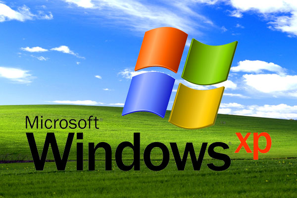
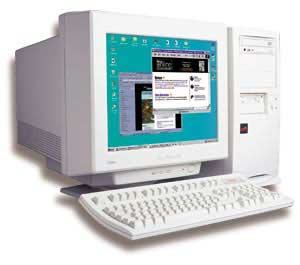

NTFS est un système de fichiers développé par Microsoft Corporation pour sa famille de systèmes d'exploitation Windows NT, à partir de Windows NT 3.1, Windows 2000 et tous leurs successeurs à ce jour (XP, Server 2003, 7 , etc.).
NTFS est le successeur du système de fichiers FAT comme système de fichiers de prédilection des systèmes d'exploitation Microsoft Windows. NTFS dispose de nombreuses améliorations techniques par rapport à la FAT et au HPFS (High Performance File System), comme un support amélioré des métadonnées, et l'utilisation de structures de données avancées pour améliorer les performances, la fiabilité et l'utilisation de l'espace disque, ainsi que des extensions supplémentaires, telles que la liste de contrôle d'accès (ACL) et la journalisation du système de fichiers.

Les versions de NTFS sont : - v1.0 avec Windows NT 3.1, publiée mi-1993 - v1.1 avec Windows NT 3.5, publiée en automne 1994- v1.2 avec Windows NT 3.51 (mi-1995) et Windows NT 4.0 (mi-1996) (parfois dénommé « NTFS 4.0 » parce que la version du pilote du système de fichiers est la 4.0) - v3.0 à partir de Windows 2000 (« NTFS v5.0 » ou « NTFS5 »)- v3.1 à partir de Windows XP (automne 2001 ; « NTFS v5.1 »)
Les Limitations
- Taille maximale de fichier : 16 To
- Nombre maximal de fichiers : 4 294 967 295
- Taille maximale du nom de fichiers : 255 caractères (UTF-16)
- Taille maximale de volume : 256 To

Hard Drive Mechanic, site sur le fonctionnement des disques durs - Tous droits réservés. Copyright Mentions LégalesContactez Site Créé par Sébastien BUNEL